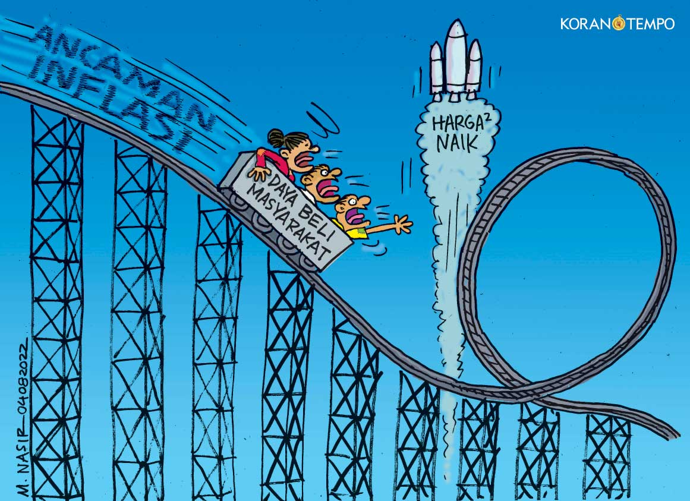
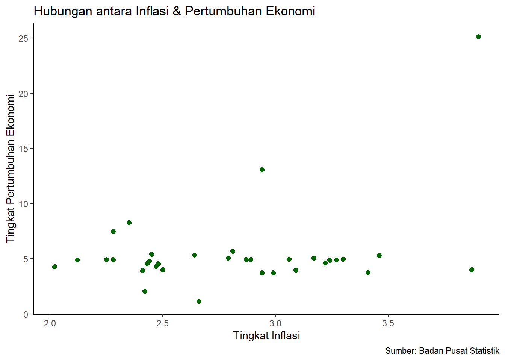

library("readxl")
library("ggplot2")Pengaruh Tingkat Inflasi terhadap Pertumbuhan Ekonomi di Indonesia pada Tahun 2023
Metode Penelitian Politeknik APP Jakarta

1 Pendahuluan
1.1 Latar belakang
Pada tahun 2023, Indonesia mengalami perubahan dinamis dalam kondisi ekonomi pasca-pandemi yang memicu kebijakan moneter dan fiskal untuk memulihkan pertumbuhan. Inflasi sebagai salah satu parameter penting dalam ekonomi, memiliki potensi memengaruhi perkembangan ekonomi di Indonesia. Penelitian ini bertujuan untuk mendalami hubungan antara tingkat inflasi di tiap provinsi dengan pertumbuhan ekonomi pada tahun 2023.

1.2 Ruang lingkup
Ruang lingkup pembahasan dari analisis ini berfokus pada pengaruh tingkat inflasi terhadap pertumbuhan ekonomi di berbagai provinsi Indonesia sepanjang tahun 2023. Ruang lingkup penelitian ini menggunakan data statistik terkait dengan tingkat inflasi dari setiap provinsi di Indonesia serta pertumbuhan ekonomi yang diamati sepanjang periode waktu yang sama.
1.3 Rumusan masalah
Apakah ada hubungan antara kedua variabel?
Apakah kedua variabel berpengaruh secara signifikan?
1.4 Tujuan dan manfaat penelitian
Tujuan dari analisis adalah untuk memberikan pemahaman seberapa jauh tingkat inflasi dapat mempengaruhi pertumbuhan ekonomi di Indonesia.
Analisis ini diharapkan dapat memberikan informasi yang berguna bagi pengambil keputusan di tingkat pemerintah, industri, dan sektor keuangan untuk mengembangkan strategi yang lebih efektif dalam mengelola inflasi, serta untuk menunjang pertumbuhan ekonomi negara.
1.5 Package
Package yang digunakan dalam penelitian ini adalah sebagai berikut:
2 Studi pustaka
Inflasi adalah peningkatan umum dan berkelanjutan dalam harga-harga barang dan jasa dalam suatu perekonomian selama periode waktu tertentu, yang mengakibatkan berkurangnya daya beli uang. Menurut Keynes, inflasi adalah “situasi di mana tingkat harga secara umum terus meningkat dan nilai uang terus menurun.”
Samuelson mendefinisikan pertumbuhan ekonomi sebagai “peningkatan dalam produksi total barang dan jasa dalam suatu negara selama jangka waktu yang cukup lama.” Peningkatan ataupun penurunan dalam laju pertumbuhan ekonomi dapat digunakan sebagai pertimbangan dalam pengambilan kebijakan yang tepat untuk menjaga stabilitas perekonomian.
3 Metode penelitian
3.1 Data
Penelitian ini menggunakan data dari kedua variabel, yaitu persentase inflasi dan persentase pertumbuhan ekonomi di tiap provinsi di Indonesia pada tahun 2023. Data yang telah dikumpulkan bersumber dari Badan Pusat Statistik.
| Provinsi | Inflasi(%) | Pertumbuhan(%) |
|---|---|---|
| Aceh | 3.41 | 3.76 |
| Sumatera Utara | 2.25 | 4.94 |
| Sumatera Barat | 2.47 | 4.30 |
| Riau | 2.50 | 4.02 |
| Jambi | 3.27 | 4.90 |
| Sumatera Selatan | 3.17 | 5.08 |
| Bengkulu | 3.09 | 3.96 |
| Lampung | 2.41 | 3.93 |
| Kep. Bangka Belitung | 3.87 | 4.01 |
| Kep. Riau | 2.12 | 4.88 |
| DKI Jakarta | 2.28 | 4.93 |
| Jawa Barat | 2.48 | 4.57 |
| Jawa Tengah | 2.89 | 4.93 |
| DI Yogyakarta | 3.30 | 4.96 |
| Jawa Timur | 3.24 | 4.86 |
| Banten | 3.06 | 4.97 |
| Bali | 2.64 | 5.35 |
| NTB | 2.66 | 1.16 |
| NTT | 2.42 | 2.08 |
| Kalimantan Barat | 2.02 | 4.27 |
| Kalimantan Tengah | 2.99 | 3.74 |
| Kalimantan Selatan | 2.43 | 4.57 |
| Kalimantan Timur | 3.46 | 5.29 |
| Kalimantan Utara | 2.44 | 4.79 |
| Sulawesi Utara | 2.45 | 5.40 |
| Sulawesi Tengah | 2.94 | 13.06 |
| Sulawesi Selatan | 2.79 | 5.08 |
| Sulawesi Tenggara | 2.87 | 4.92 |
| Gorontalo | 3.22 | 4.62 |
| Sulawesi Barat | 2.28 | 7.50 |
| Maluku | 2.81 | 5.69 |
| Maluku Utara | 3.90 | 25.13 |
| Papua Barat | 2.94 | 3.73 |
| Papua | 2.35 | 8.28 |
3.2 Metode analisis
Metode yang digunakan dalam penelitian ini adalah regresi univariat atau Ordinary Least Square (OLS) dengan 1 variabel independen untuk memahami hubungan dan pengaruh antara inflasi dengan pertumbuhan ekonomi di Indonesia. Spesifikasi yang dilakukan adalah:
\[ y_{t}=\beta_0 + \beta_1 x_t+\mu_t \] di mana \(y_t\) adalah inflasi dan \(x_t\) adalah pertumbuhan ekonomi.
4 Pembahasan
4.1 Pembahasan masalah
Berikut ini adalah visualisasi dari data yang telah dikumpulkan.
#membaca data
library("readxl")
dat<-read_excel("metopen.xlsx")
head(dat)# A tibble: 6 × 2
inflasi pertumbuhan
<dbl> <dbl>
1 3.41 3.76
2 2.25 4.94
3 2.47 4.3
4 2.5 4.02
5 3.27 4.9
6 3.17 5.08library("ggplot2")
ggplot(data=dat,aes(x=inflasi,y=pertumbuhan)) +
geom_point(color="darkgreen",size=2) +
labs(title="Hubungan antara Inflasi & Pertumbuhan Ekonomi",
x="Tingkat Inflasi",
y="Tingkat Pertumbuhan Ekonomi",
caption = "Sumber: Badan Pusat Statistik") +
theme_classic()
4.2 Analisis masalah
Berikut ini adalah hasil regresinya.
reg<-lm(pertumbuhan~inflasi,data=dat)
summary(reg)
Call:
lm(formula = pertumbuhan ~ inflasi, data = dat)
Residuals:
Min 1Q Median 3Q Max
-4.5115 -2.0380 -0.5519 0.7418 16.5238
Coefficients:
Estimate Std. Error t value Pr(>|t|)
(Intercept) -2.404 3.901 -0.616 0.5422
inflasi 2.823 1.371 2.059 0.0477 *
---
Signif. codes: 0 '***' 0.001 '**' 0.01 '*' 0.05 '.' 0.1 ' ' 1
Residual standard error: 3.761 on 32 degrees of freedom
Multiple R-squared: 0.117, Adjusted R-squared: 0.08942
F-statistic: 4.241 on 1 and 32 DF, p-value: 0.047685 Kesimpulan
Berdasarkan hasil regresi yang telah dilakukan, dapat dilihat bahwa koefisien regresi untuk variabel inflasi adalah 2.823, dengan nilai p-value sebesar 0.0477, hal ini menunjukkan bahwa variabel inflasi memiliki dampak yang signifikan terhadap pertumbuhan ekonomi dikarenakan hasil terbut memiliki p-value kurang dari 0.005.
Dapat disimpulkan juga bahwa tingkat kenaikan ataupun penurunan inflasi dapat mempengaruhi pertumbuhan ekonomi, oleh sebab itu Indonesia memerlukan kebijakan dan pengelolaan yang lebih baik untuk mengurangi inflasi dan meningkatkan pertumbuhan ekonomi. Salah satu langkah yang dapat diambil adalah kebijakan moneter yang memadukan pengetatan suku bunga dan pengendalian jumlah uang beredar. Bank sentral dapat meningkatkan suku bunga untuk meredam inflasi, sekaligus menarik investor untuk menyimpan uang di bank, mengurangi jumlah uang beredar.
6 Referensi
Data Pertumbuhan Ekonomi di 34 Provinsi pada Kuartal III/2023. (t.t.). Diambil 10 Januari 2024, dari https://dataindonesia.id/ekonomi/detail/data-pertumbuhan-ekonomi-di-34-provinsi-pada-kuartal-iii2023
Nadirin, M. (2017). Hubungan antara Inflasi dan Pertumbuhan Ekonomi di Indonesia periode 1994.1-2013.4. Jurnal Ilmiah Mahasiswa FEB, 5(2), Article 2. https://jimfeb.ub.ac.id/index.php/jimfeb/article/view/4080